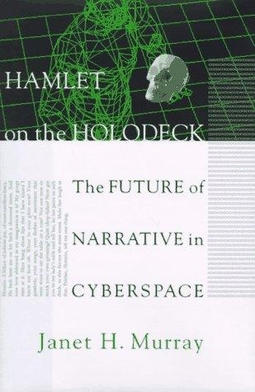
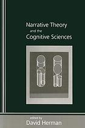
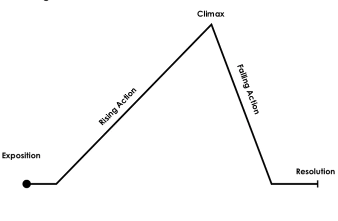
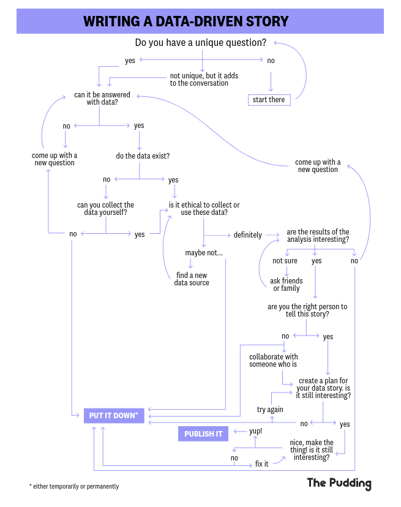

<!DOCTYPE html>
<html lang="en">
  <head>
    <meta charset="utf-8" />
    <meta name="viewport" content="width=device-width, initial-scale=1.0, maximum-scale=1.0, user-scalable=no" />

    <title>w10-7AAVDM52-storytelling</title>
    <link rel="stylesheet" href="dist/reveal.css" />
    <link rel="stylesheet" href="dist/theme/black.css" id="theme" />
    <link rel="stylesheet" href="plugin/highlight/zenburn.css" />
	<link rel="stylesheet" href="css/layout.css" />
	<link rel="stylesheet" href="plugin/customcontrols/style.css">
	<link rel="stylesheet" href="plugin/chalkboard/style.css">

	<link rel="stylesheet" href="plugin/reveal-pointer/pointer.css" />


    <script defer src="dist/fontawesome/all.min.js"></script>

	<script type="text/javascript">
		var forgetPop = true;
		function onPopState(event) {
			if(forgetPop){
				forgetPop = false;
			} else {
				parent.postMessage(event.target.location.href, "app://obsidian.md");
			}
        }
		window.onpopstate = onPopState;
		window.onmessage = event => {
			if(event.data == "reload"){
				window.document.location.reload();
			}
			forgetPop = true;
		}

		function fitElements(){
			const itemsToFit = document.getElementsByClassName('fitText');
			for (const item in itemsToFit) {
				if (Object.hasOwnProperty.call(itemsToFit, item)) {
					var element = itemsToFit[item];
					fitElement(element,1, 1000);
					element.classList.remove('fitText');
				}
			}
		}

		function fitElement(element, start, end){

			let size = (end + start) / 2;
			element.style.fontSize = `${size}px`;

			if(Math.abs(start - end) < 1){
				while(element.scrollHeight > element.offsetHeight){
					size--;
					element.style.fontSize = `${size}px`;
				}
				return;
			}

			if(element.scrollHeight > element.offsetHeight){
				fitElement(element, start, size);
			} else {
				fitElement(element, size, end);
			}		
		}


		document.onreadystatechange = () => {
			fitElements();
			if (document.readyState === 'complete') {
				if (window.location.href.indexOf("?export") != -1){
					parent.postMessage(event.target.location.href, "app://obsidian.md");
				}
				if (window.location.href.indexOf("print-pdf") != -1){
					let stateCheck = setInterval(() => {
						clearInterval(stateCheck);
						window.print();
					}, 250);
				}
			}
	};


        </script>
  </head>
  <body>
    <div class="reveal">
      <div class="slides"><section  data-markdown><script type="text/template"><!-- .slide: class="drop" -->
<div class="" style="position: absolute; left: 0px; top: 0px; height: 1199px; width: 1920px; min-height: 1199px; display: flex; flex-direction: column; align-items: center; justify-content: center" absolute="true">

# Visual storytelling
## Data Visualisation ― week 10


[Dr Daniel Chávez Heras](https://movingpixel.net/)

[7AAVDM52](https://keats.kcl.ac.uk/course/view.php?id=108839)

2023-24
</div>

<aside class="notes"><p>Today, we&#39;re exploring the intersection of data visualisation and storytelling. We&#39;ll analyse how narrative can transform data into compelling stories that engage and move audiences.</p>
</aside></script></section><section  data-markdown><script type="text/template"><!-- .slide: class="has-dark-background drop" data-background-color="#2b1804" -->
<div class="" style="position: absolute; left: 0px; top: 0px; height: 1199px; width: 1920px; min-height: 1199px; display: flex; flex-direction: column; align-items: center; justify-content: center" absolute="true">

# The road ahead

<div class="callout callout-color8">
<div class="callout-title">
<div class="callout-icon">

<i class="fas fa-list" ></i>


</div>
<div class="callout-title-inner">

In today's lecture:  

</div>
</div>
<div class="callout-content">

1. Why storytelling?

2. Narrative theory

3. Concepts and techniques

4. Interactive data narratives

5. Questions

</div>
</div>
</div></script></section><section  data-markdown><script type="text/template"><!-- .slide: class="has-dark-background drop" data-background-color="#304f5e" -->
<div class="" style="position: absolute; left: 0px; top: 0px; height: 1199px; width: 1920px; min-height: 1199px; display: flex; flex-direction: column; align-items: center; justify-content: center" absolute="true">

# 1. Why storytelling?

<i class="fas fa-theater-masks fa-4x" ></i>


<i class=""></i>
</div></script></section><section  data-markdown><script type="text/template"><!-- .slide: class="drop" -->
<div class="" style="position: absolute; left: 0px; top: 0px; height: 1199px; width: 1920px; min-height: 1199px; display: flex; flex-direction: column; align-items: center; justify-content: center" absolute="true">

## Data informs, story persuades

- Gives the viewer a vantage point, provides <mark>orientation</mark>
- Enables the viewer to <mark>focus</mark> on aspects that are more important than others
- Engages viewers at an <mark>emotional level</mark>
- Challenges or reinforces the <mark>beliefs</mark> of viewers
</div>

<aside class="notes"><p>Visual storytelling in the context of data visualisation is about more than just presenting data; it mobilises the systems of belief of users to involve them, and thus persuade them</p>
</aside></script></section><section  data-markdown><script type="text/template"><!-- .slide: class="has-dark-background drop" data-background-color="#304f5e" -->
<div class="" style="position: absolute; left: 0px; top: 0px; height: 1199px; width: 1920px; min-height: 1199px; display: flex; flex-direction: column; align-items: center; justify-content: center" absolute="true">

# 2. Narrative theory

<i class="fas fa-book-open fa-4x" ></i>
</div>

<aside class="notes"><p>not a comprehensive review, just a taste that ir relevant to data visualisation</p>
</aside></script></section><section  data-markdown><script type="text/template"><!-- .slide: class="drop" -->
<div class="" style="position: absolute; left: 0px; top: 0px; height: 1199px; width: 1920px; min-height: 1199px; display: flex; flex-direction: column; align-items: center; justify-content: center" absolute="true">

## Narratology

>The study of narrative structure and the ways if affects human perception

- Roots in the western tradition can be traced to Aristotle (Poetics)
- 20th century narratology - [Tzvetan Todorov](https://en.wikipedia.org/wiki/Tzvetan_Todorov), [Mikhail Bakhtin](https://en.wikipedia.org/wiki/Mikhail_Bakhtin). Both looking at the earlier work of the Russian Formalists and [Vladimir Propp](https://en.wikipedia.org/wiki/Vladimir_Propp).
- 21st century _cognitive_ naratology - [David Herman](https://search.worldcat.org/search?q=au=%22Herman%2C%20David%22)
</div>

<aside class="notes"><p>quote by Felluga, Dino. &quot;General Introduction to Narratology.&quot; (2011) <em>Introductory Guide to Critical Theory</em>.
Aristotle was concerned with drama: The surviving book of <em>Poetics</em> is primarily concerned with drama; the analysis of <a href="https://en.wikipedia.org/wiki/Tragedy" title="Tragedy">tragedy</a> constitutes the core of the discussion. e.g. Catharsis. 
Todorov: <em>Grammaire du Décaméron</em>, 1969 
Propp: <em>Morphology of the tale</em>, 1928 
Bakhtin: <em><a href="https://en.wikipedia.org/wiki/The_Dialogic_Imagination">The Dialogic Imagination</a></em> (1975)</p>
</aside></script></section><section  data-markdown><script type="text/template"><!-- .slide: class="drop" -->
<div class="" style="position: absolute; left: 0px; top: 0px; height: 1199px; width: 1920px; min-height: 1199px; display: flex; flex-direction: column; align-items: center; justify-content: center" absolute="true">



_Hamlet on the Holodeck: The Future of Narrative in Cyberspace_
[Janet H. Murray](https://en.wikipedia.org/wiki/Janet_Murray)1997
</div></script></section><section  data-markdown><script type="text/template"><!-- .slide: class="drop" -->
<div class="" style="position: absolute; left: 0px; top: 0px; height: 1199px; width: 1920px; min-height: 1199px; display: flex; flex-direction: column; align-items: center; justify-content: center" absolute="true">



_Narrative theory and the cognitive sciences_
David Herman, 2003
</div></script></section><section  data-markdown><script type="text/template"><!-- .slide: class="has-dark-background drop" data-background-color="#304f5e" -->
<div class="" style="position: absolute; left: 0px; top: 0px; height: 1199px; width: 1920px; min-height: 1199px; display: flex; flex-direction: column; align-items: center; justify-content: center" absolute="true">

# 3. Concepts and techniques

<i class="fas fa-tools fa-4x" ></i>
</div>

<aside class="notes"><p>what is useful for data vis</p>
</aside></script></section><section  data-markdown><script type="text/template"><!-- .slide: class="drop" -->
<div class="" style="position: absolute; left: 0px; top: 0px; height: 1199px; width: 1920px; min-height: 1199px; display: flex; flex-direction: column; align-items: center; justify-content: center" absolute="true">

## Key concepts

- Change over time (usually characters, but also variables!)
- Narrative arc (shape of the story)
- Fabula (story) and Syuzhet (plot)
</div>

<aside class="notes"><p>characters, settings, conflict, resolution</p>
</aside></script></section><section  data-markdown><script type="text/template"><!-- .slide: class="drop" -->
<div class="" style="position: absolute; left: 0px; top: 0px; height: 1199px; width: 1920px; min-height: 1199px; display: flex; flex-direction: column; align-items: center; justify-content: center" absolute="true">

## Kurt Vonnegut on the shape of stories 

<iframe width="1080" height="768" src="https://www.youtube.com/embed/j9Qsiu8qqvA?si=qqHoT6Rwo_h7-kPP" title="YouTube video player" frameborder="0" allow="accelerometer; autoplay; clipboard-write; encrypted-media; gyroscope; picture-in-picture; web-share" allowfullscreen></iframe>
</div></script></section><section  data-markdown><script type="text/template"><!-- .slide: class="drop" -->
<div class="" style="position: absolute; left: 0px; top: 0px; height: 1199px; width: 1920px; min-height: 1199px; display: flex; flex-direction: column; align-items: center; justify-content: center" absolute="true">



Freytag's pyramid
</div>

<aside class="notes"><p>German novelist Gustav Freytag <em><a href="https://en.wikipedia.org/w/index.php?title=Die_Technik_des_Dramas&amp;action=edit&amp;redlink=1" title="Die Technik des Dramas (page does not exist)">Die Technik des Dramas</a></em> (1863)</p>
</aside></script></section><section  data-markdown><script type="text/template"><!-- .slide: class="drop" -->
<div class="" style="position: absolute; left: 0px; top: 0px; height: 1199px; width: 1920px; min-height: 1199px; display: flex; flex-direction: column; align-items: center; justify-content: center" absolute="true">

Other narrative shapes:

- [Hero's Journey](https://en.wikipedia.org/wiki/Hero%27s_journey)
- [Kishōtenketsu](https://en.wikipedia.org/wiki/Kish%C5%8Dtenketsu)
</div>

<aside class="notes"><p>Kishōtenketsu: Chinese, Korean and Japanese narratives. Originated from Chinese poetry</p>
</aside></script></section><section  data-markdown><script type="text/template"><!-- .slide: class="drop" -->
<div class="" style="position: absolute; left: 0px; top: 0px; height: 1199px; width: 1920px; min-height: 1199px; display: flex; flex-direction: column; align-items: center; justify-content: center" absolute="true">


- Fabula (<mark>story</mark>): all the events that occur in the sequence in which they happened.
- Syuzhet (<mark>plot</mark>): the specific events told in the order in which they are told.
</div></script></section><section  data-markdown><script type="text/template"><!-- .slide: class="drop" -->
<div class="" style="position: absolute; left: 0px; top: 0px; height: 1199px; width: 1920px; min-height: 1199px; display: flex; flex-direction: column; align-items: center; justify-content: center" absolute="true">

## Selective withholding

> Purposeful organisation of what characters knows vs what audiences know.

Different aesthetic effects:
- Restricted narration: audiences **know less** than characters --> <mark>mystery</mark>
- Unrestricted narration: audiences **know more** than characters --> <mark>suspense</mark>
</div></script></section><section  data-markdown><script type="text/template"><!-- .slide: class="has-dark-background drop" data-background-color="#304f5e" -->
<div class="" style="position: absolute; left: 0px; top: 0px; height: 1199px; width: 1920px; min-height: 1199px; display: flex; flex-direction: column; align-items: center; justify-content: center" absolute="true">

# 4. Interactive data narratives

<i class="fas fa-gamepad fa-4x" ></i>
</div>

<aside class="notes"><p>Case studies from the pudding and information is beautiful</p>
</aside></script></section><section  data-markdown><script type="text/template"><!-- .slide: class="drop" -->
<div class="" style="position: absolute; left: 0px; top: 0px; height: 1199px; width: 1920px; min-height: 1199px; display: flex; flex-direction: column; align-items: center; justify-content: center" absolute="true">



source: https://pudding.cool/process/pivot-continue-down/
</div>

<aside class="notes"><p>do you have a question &amp; can it be answered with data?
Do the data exist?
Is it ethical to collect it?
Are the results of analysis interesting?
Are you the right person to tell the story?
Create a plan or a storyboard
Build it!</p>
</aside></script></section><section  data-markdown><script type="text/template"><!-- .slide: class="drop" -->
<div class="" style="position: absolute; left: 0px; top: 0px; height: 1199px; width: 1920px; min-height: 1199px; display: flex; flex-direction: column; align-items: center; justify-content: center" absolute="true">

## Controlling time

- User navigation: left to right, top to bottom; clicking, tapping, scrolling?
- Tapping, swiping, sliding.
- One point, one chart.
- "Scrollytelling" when content (e.g., a graphic) is revealed or changed as the user scrolls. It does not alter scroll behavior, but simply monitors it.
</div>

<aside class="notes"><p>interaction and layout go together</p>
</aside></script></section><section  data-markdown><script type="text/template"><!-- .slide: class="drop" -->
<div class="" style="position: absolute; left: 0px; top: 0px; height: 1199px; width: 1920px; min-height: 1199px; display: flex; flex-direction: column; align-items: center; justify-content: center" absolute="true">

## Case studies

- [Ali Wong Stand Up structure](https://pudding.cool/2018/02/stand-up/)
- [Greatest album of all time?](https://pudding.cool/2024/03/greatest-music/)
- [What is the Most Successful Hollywood Movie of All Time?](https://informationisbeautiful.net/visualizations/what-is-the-most-successful-hollywood-movie-of-all-time/)
- [10 Things everyone hates about you](https://pudding.cool/2017/12/hater/)
- [24hrs of an invisible epidemic](https://pudding.cool/2023/09/invisible-epidemic/)
</div>

<aside class="notes"><p>technical aspects matter, but the narrative form matters most!</p>
</aside></script></section><section  data-markdown><script type="text/template"><!-- .slide: class="drop" -->
<div class="" style="position: absolute; left: 0px; top: 0px; height: 1199px; width: 1920px; min-height: 1199px; display: flex; flex-direction: column; align-items: center; justify-content: center" absolute="true">

## More resources

- Practical guides from The Pudding:
	- [Working with Data](https://pudding.cool/process/how-to-make-dope-shit-part-1/)
	- [Design](https://pudding.cool/process/how-to-make-dope-shit-part-2/)
	- [Storytelling](https://pudding.cool/process/how-to-make-dope-shit-part-3/) and [The Scrollytelling Scourge](https://eagereyes.org/blog/2016/the-scrollytelling-scourge)
- [How to implement scrollytelling with six different libraries](https://pudding.cool/process/how-to-implement-scrollytelling/)
	- See [demo folder](https://github.com/the-pudding/how-to-implement-scrollytelling/tree/master/demo) for code.
- [An Introduction to Scrollama.js](https://pudding.cool/process/introducing-scrollama/)
- [Easier scrollytelling with position sticky](https://pudding.cool/process/scrollytelling-sticky/)
</div>

<aside class="notes"><p>technical aspects matter, but the narrative form matters most!</p>
</aside></script></section><section  data-markdown><script type="text/template"><!-- .slide: class="has-dark-background drop" data-background-color="#2b1804" -->
<div class="" style="position: absolute; left: 0px; top: 0px; height: 1199px; width: 1920px; min-height: 1199px; display: flex; flex-direction: column; align-items: center; justify-content: center" absolute="true">

# The road behind

<div class="callout callout-color2">
<div class="callout-title">
<div class="callout-icon">

<i class="fas fa-fire-alt" ></i>


</div>
<div class="callout-title-inner">

In summary:

</div>
</div>
<div class="callout-content">

- Narrative can help engage viewers emotionally

- Narrative theory can inform how to tell stories with data

- Interactive narratives formats involve viewers as users

</div>
</div>
</div></script></section><section  data-markdown><script type="text/template"><!-- .slide: class="drop" -->
<div class="" style="position: absolute; left: 0px; top: 0px; height: 1199px; width: 1920px; min-height: 1199px; display: flex; flex-direction: column; align-items: center; justify-content: center" absolute="true">

# 5. Questions?
<i class="far fa-question-circle fa-4x" ></i>
</div>

<aside class="notes"><p>bye!</p>
</aside></script></section></div>
    </div>

    <script src="dist/reveal.js"></script>

    <script src="plugin/markdown/markdown.js"></script>
    <script src="plugin/highlight/highlight.js"></script>
    <script src="plugin/zoom/zoom.js"></script>
    <script src="plugin/notes/notes.js"></script>
    <script src="plugin/math/math.js"></script>
	<script src="plugin/mermaid/mermaid.js"></script>
	<script src="plugin/chart/chart.min.js"></script>
	<script src="plugin/chart/plugin.js"></script>
	<script src="plugin/menu/menu.js"></script>
	<script src="plugin/customcontrols/plugin.js"></script>
	<script src="plugin/chalkboard/plugin.js"></script>
	<script src="plugin/reveal-pointer/pointer.js"></script>
	<script src="plugin/elapsed-time-bar/elapsed-time-bar.js"></script>

    <script>
      function extend() {
        var target = {};
        for (var i = 0; i < arguments.length; i++) {
          var source = arguments[i];
          for (var key in source) {
            if (source.hasOwnProperty(key)) {
              target[key] = source[key];
            }
          }
        }
        return target;
      }

	  function isLight(color) {
		let hex = color.replace('#', '');

		// convert #fff => #ffffff
		if(hex.length == 3){
			hex = `${hex[0]}${hex[0]}${hex[1]}${hex[1]}${hex[2]}${hex[2]}`;
		}

		const c_r = parseInt(hex.substr(0, 2), 16);
		const c_g = parseInt(hex.substr(2, 2), 16);
		const c_b = parseInt(hex.substr(4, 2), 16);
		const brightness = ((c_r * 299) + (c_g * 587) + (c_b * 114)) / 1000;
		return brightness > 155;
	}

	var bgColor = getComputedStyle(document.documentElement).getPropertyValue('--r-background-color').trim();
	var isLight = isLight(bgColor);

	if(isLight){
		document.body.classList.add('has-light-background');
	} else {
		document.body.classList.add('has-dark-background');
	}

      // default options to init reveal.js
      var defaultOptions = {
        controls: true,
        progress: true,
        history: true,
        center: true,
        transition: 'default', // none/fade/slide/convex/concave/zoom
        plugins: [
          RevealMarkdown,
          RevealHighlight,
          RevealZoom,
          RevealNotes,
          RevealMath.MathJax3,
		  RevealMermaid,
		  RevealChart,
		  RevealCustomControls,
		  RevealMenu,
	      RevealPointer,
		  RevealChalkboard, 
		  ElapsedTimeBar
        ],


    	allottedTime: 120 * 1000,

		mathjax3: {
			mathjax: 'plugin/math/mathjax/tex-mml-chtml.js',
		},
		markdown: {
		  gfm: true,
		  mangle: true,
		  pedantic: false,
		  smartLists: false,
		  smartypants: false,
		},

		mermaid: {
			theme: isLight ? 'default' : 'dark',
		},

		customcontrols: {
			controls: [
				{id: 'toggle-overview',
				title: 'Toggle overview (O)',
				icon: '<i class="fa fa-th"></i>',
				action: 'Reveal.toggleOverview();'
				},
				{ icon: '<i class="fa fa-pen-square"></i>',
				title: 'Toggle chalkboard (B)',
				action: 'RevealChalkboard.toggleChalkboard();'
				},
				{ icon: '<i class="fa fa-pen"></i>',
				title: 'Toggle notes canvas (C)',
				action: 'RevealChalkboard.toggleNotesCanvas();'
				},
			]
		},
		menu: {
			loadIcons: false
		}
      };

      // options from URL query string
      var queryOptions = Reveal().getQueryHash() || {};

      var options = extend(defaultOptions, {"width":1920,"height":1199,"margin":0,"controls":true,"progress":true,"slideNumber":true,"transition":"slide","transitionSpeed":"default"}, queryOptions);
    </script>

    <script>
      Reveal.initialize(options);
    </script>
  </body>

  <!-- created with Advanced Slides -->
</html>
